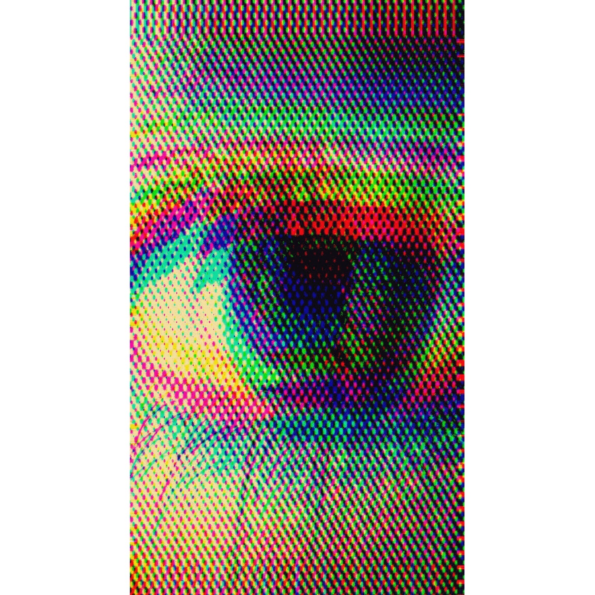

Searching for the best meme t-shirts is a genuinely risky activity. Ninety percent of the results are a screenshot stretched onto the cheapest blank available, printed by a drop-shipper who found the meme yesterday and will have forgotten it by the time your parcel lands. You get a shirt that is funny for four days and embarrassing for four years.
So here is a ranking with an actual criterion behind it: how well does the joke age? Everything below is judged on whether it will still land in three years, whether the print survives a laundry cycle, and whether wearing it makes you look like a person with a sense of humour or a person with a shopping problem.
What separates a good meme shirt from landfill merch
Before the list, the four things that actually decide whether a meme graphic tee is worth buying:
- The reference has calcified. Memes that have survived several years of internet churn — Harambe, rickrolling, Kilroy, alien disclosure — have stopped being trends and become folklore. Those are safe. A meme from last month is a gamble you will lose.
- It's drawn, not screenshotted. A low-resolution image lifted off a forum and stretched to 12 inches wide looks exactly like what it is. Original artwork built from the reference reads as design instead of theft.
- It rewards the in-group. The best meme t-shirts are legible to maybe 8% of any given room. That's the point. A shirt everyone understands is just a slogan.
- The blank isn't an afterthought. A great joke on a 3.5oz shirt that goes translucent by August is a waste of a great joke. Heavyweight cotton, direct-to-garment printing, no plastic transfer that peels in the dryer.
That last one gets ignored constantly, and it's the reason most meme merch ends up in a donation bag. If you want the long version, we wrote a whole piece on what actually makes a quality graphic tee.
The best meme t-shirts, ranked
1. Dicks Out for Harambe
Nearly a decade old and still stopping people in the street, which is the entire test. The Harambe meme outlived its own news cycle, then outlived irony itself, and has settled into something closer to a shared cultural artefact. The Dicks Out for Harambe tee is the single most durable meme shirt we make — it gets a reaction from strangers in a way that almost nothing else in the catalogue does.
Best for: anyone who has never emotionally moved on from 2016. Ages: extremely well.
2. Rick Roll Tee
A rickroll you can perform in person, silently, indefinitely. The Rick Roll tee works because the meme is now approaching twenty years old and has been absorbed into general knowledge — your uncle gets it, your niece gets it, and both of them are annoyed. There is no expiry date on a bit this well established.
Best for: committed long-form bit people. Ages: already aged; it's fine.
3. Harambe Warhol
The same reference as #1 but rendered as pop art, which does something clever: it makes the joke legible from across a room while looking, at a glance, like a legitimate print. Harambe Warhol is the meme t-shirt to buy if you want the reference without the sentence.
Best for: people who want plausible deniability. Ages: very well.
4. Free the Aliens (the whole series)
Alien disclosure is the rare internet obsession that keeps getting more relevant, and it has generated four separate designs here: the original Free the Aliens, the glitchy kitty, a clean typewriter-text version, and an alien cherub judging you from a flowerbed. Buy whichever matches your level of commitment to the cause.
Best for: disclosure enthusiasts and people who find government secrecy funny rather than upsetting. Ages: will outlast us.
5. Kilroy Was Here
The oldest meme on this list by about seventy years. Kilroy Was Here was scrawled on walls by GIs in the 1940s, which makes it proof that meme culture predates the internet by several decades. It reads as vintage graphic design to people who don't know it and as deep-cut history to people who do.
Best for: history nerds and anyone tired of explaining that memes aren't new. Ages: has already survived a world war.
6. Jimothy Is My Religion
If you don't know who Jimothy is, Google him and then come back changed. Jimothy Is My Religion is the newest entry on this list and the most chronically-online, and there are two calmer versions — Majestic Jimothy and Minimalist Jimothy — if full devotion feels like a lot for a Tuesday.
Best for: people whose humour is 100% internet-derived. Ages: the riskiest pick here, and worth it.
7. We Blame Society (But We Are Society)
This one is less a specific meme than the general format of online moral reasoning, compressed into one sentence. It's the most quietly devastating shirt in the collection and the one most likely to start an actual conversation rather than a laugh.
Best for: the doom-scroller in your life. Ages: unfortunately, indefinitely.
8. Delusional But Thriving
The self-aware end of meme culture: Delusional But Thriving is the shirt version of every coping-mechanism post you've screenshot. It's the easiest one on this list to wear in public without explaining anything.
Best for: everyone, honestly. Ages: well — the format is older than the internet.
Shirts for people who get the reference.
Shop meme t-shirtsHow to pick the right one (for you or as a gift)
The best meme t-shirt for you is the one you understood before you finished reading the product title. If you had to think about it, it's the wrong one — the good ones are instant.
Buying as a gift is a different exercise entirely. The correct move is not "which of these is funniest" but "which of these belongs to a reference we share." A generically funny meme shirt is a mediocre gift; a hyper-specific one is one of the best sub-$30 gifts available, because it proves you were paying attention. Our graphic tee gift guide goes deeper on that, and this piece on why meme shirts are having a moment covers why the format works at all.
On sizing: order true to size for a normal fit or one up for the slouchy drape that stops a meme tee reading like corporate merch. Every listing publishes real chest and length measurements, and the size guide has the full chart.
A meme shirt isn't a joke you tell. It's a joke you leave lying around for the right person to find.
If none of the eight above is quite it, the full meme t-shirt collection has the rest, and the broader funny t-shirts range picks up where internet references leave off. Free shipping on everything, as always.
Meme t-shirt questions people actually ask
What are the best meme t-shirts to buy right now?
The ones built on references that have already survived years of internet churn rather than last month's trend. Our top picks are Dicks Out for Harambe, the Rick Roll tee, Harambe Warhol, the Free the Aliens series, Kilroy Was Here, Jimothy Is My Religion, We Blame Society and Delusional But Thriving.
Do meme t-shirts go out of style?
Trend-chasing ones do, almost immediately — a shirt printed from a currently-viral screenshot is usually dated before it ships. Meme shirts built on references that have already lasted several years behave completely differently, which is why every design on this list is old as a cultural object.
Where can I buy meme t-shirts that aren't cheap drop-shipped merch?
Look for independent brands that draw original artwork rather than reprinting screenshots, and that name the blank they print on. Everything in the Becky Wexlin meme collection is drawn in-house in Santa Barbara and printed to order on premium blanks, with free shipping on every order.
What size meme t-shirt should I order?
True to size for a standard fit, one up for the relaxed drape most people want from a graphic tee. Every listing publishes real chest and body-length measurements for its blank — compare them on the size guide rather than guessing from a letter.